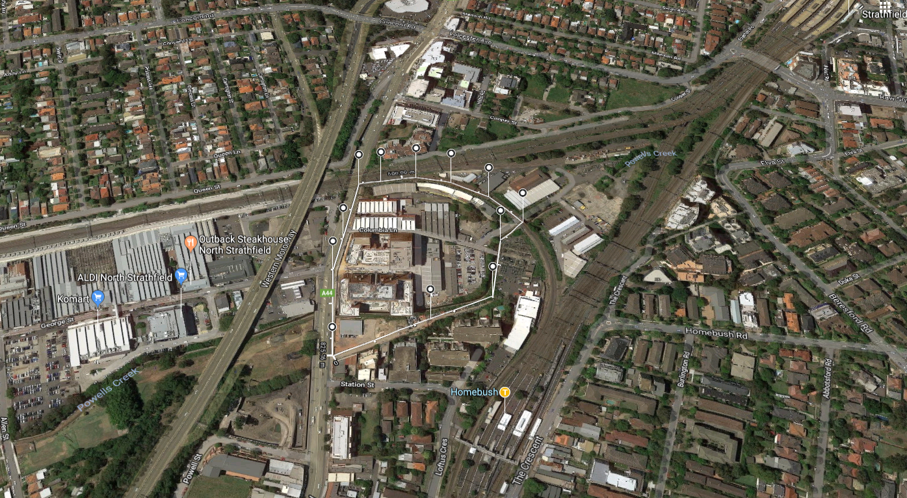

z5213811
The data show that men have exponentially more jobs in a professional area than women,
eg. Biologist, chemist architect, graphic designer, etc.
It's a clear lack of equality and my design aims to fix that
The chart shows that the majority of tiles are coloured, light orange. Each light orange tile indicates that there are 62-141 Male professionals in that area. These large number of professionals are densely populated in the northern and eastern district of the map. These number only begin to wane when shifting focus to southern and western locations, possibly due to lower income families that populate the area.


The female division displays a majority of light purple tiles, which indicate 23-38 female professionals in those areas. This shows that male professionals are possibly tripling the number of female professionals. Female often have higher than usual number in places surrounding the city and is most notably able to compete with male number in the Marrickville area.

My solution involves a creating a new University. This university will assist more females to be eligible for professional jobs by hosting courses that are geared towards this particular gender. I've found that These Professions have proven to be high-paying as well as popular amoung this gender, eg. Nurse Practitioner, lawyer, software developer, physician, engineer, human resources manager etc. The colours of the design representthe equality and equity that I strive to produce.
To as effective as possible in attracting the best possible number of people to attend, I've chosen Homebush, a location that men have dominated in the professional industry and is near areas with higher professional jobs such as Marrickville.
